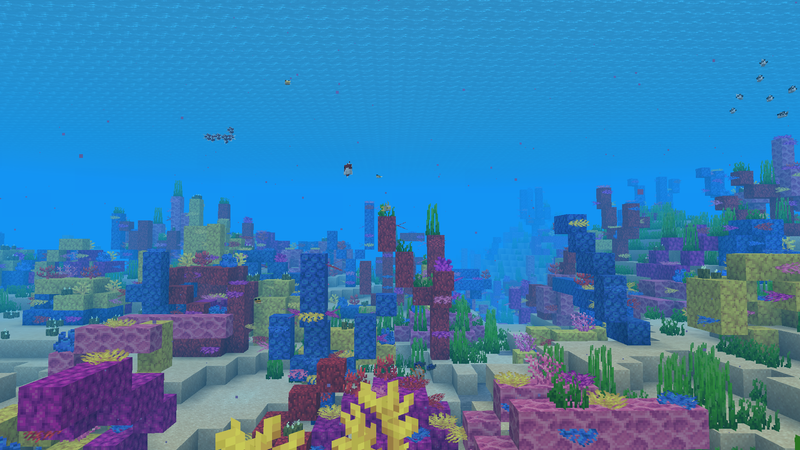
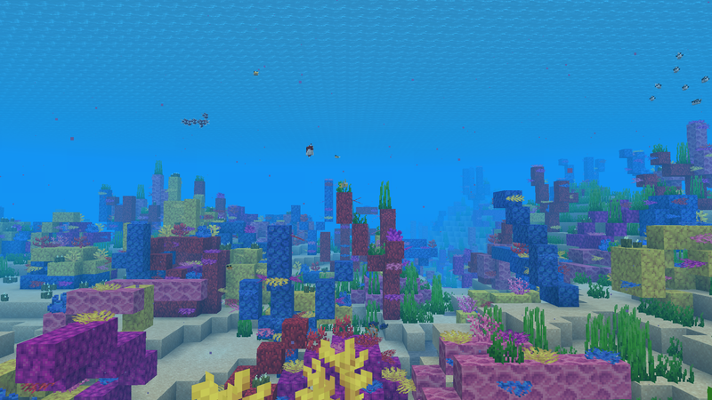

Minecraft
Minecrat is a open world survival game whch a big focus on creativity. Minecraft first come out in May/17/2009 and to this day it still has a huge community and regular updateds . This website many become outdate becuse of future updates but as of 10/2/2025 is website is a great resource for new player want to lrean about the game and has many helpful tips. Down below will be a list of boim in the Overworld of minecraft.
Biomes Of The Overworld


 



A great place to get wood, there is 3 types of forest. Birch forest has nothing but birch trees. A flower forest has birch and oak trees and has the name gives way, a crazy amount of flowers. A generic forest just has oak and birch trees. All forest can have bee hives and wolfs which will bones can become your dog!
This is the rarest boim in the game! If you hind it wright down the coordinates because you may not find a another one. It has giant mushrooms, mycelium, and mushrooms cows! The mycelium stops mobs form spawning so its one of the most peaceful boim in the game. The mushrooms cows can be milked with a wooden blow which gives you mushroom soup! Trees do not spawn here so wood is scarce here.
Sand and more sand is what you get in the Desert. 3 structures can spawn here which are temples, water wells, and villages. It’s also the home for camels, cactuses, and Husks, which is a hostel mob. If it is hit, it will deplete your hunger bar.
The pale garden is one of the more dangerous places in the overworld, but if you show up there during the day you will be safe. It is at night when jt becomes dangerous. The Creaking spawns in at night and charges at you when are not looking. You cannot hit it with your sword, instead you have to find its heart which is located in a random tree in the pale garden.
A land made of hardened clay, red sand, and huge hills. This biome is the best place to get hardened clay and the only place to find red sand. It is one of the rarest biomes in the game! If you manage to find one, make sure to write down coordinates.
This is a place where navigating is a head ache. The Jungle is filled with huge jungle trees and vines. If you are lucky, you may find bamboo, pandas, and a temple. There will always be ocelots, parrots, and coca beans. A must visit place!
You will see a lot of the Ocean biome through your playthrough. You can find kelp, fish, drowned mobs, and dolphins. Dolphins can speed up boats, which is great because the ocean tends to be big and time-consuming to navigate. Ocean monuments can spawn in the ocean but is for more experienced players, so if you see a temple in the water stay away! The drowned mobs can spawn with tridents which make them deadly, so fight with caution!
Dark Oak trees are everywhere and because of how big they are, it casts the biome in darkness, so watch out for hostile mobs! Giant mushrooms can be found here and there is a chance of a Woodland mansion spawning, which you should explore with caution!
The Warm Ocean or tropical ocean is one of the most colorful biomes in the game. It’s full of coral which comes in many colors, tons of tropical fish, and sea pickles! This biome is not very common but also is not very rare.
A bigger swamp with mangrove trees instead of oak trees. There are mud blocks everywhere and the roots of the mangrove trees make this biome a nightmare to walk through. Frogs can spawn here just like the swamp. It’s a rare biome, so if you find it write down the coordinates.
This is a spruce wood heaven if you like build with it because there so much wood in this biome. A basic Taiga just has trees and can spawn villages and has berries. A snow Taiga can spawn villages. A green Taiga has moss cobblestone, podzol, and berries. All Taigas can spawn foxes.
This is a very flat place which is perfect for building and it’s the most common biome. Villages can spawn here, and you may also find sunflowers. This biome does not have a lot going on, but this is an iconic biome that provides a great place to build your starter home.